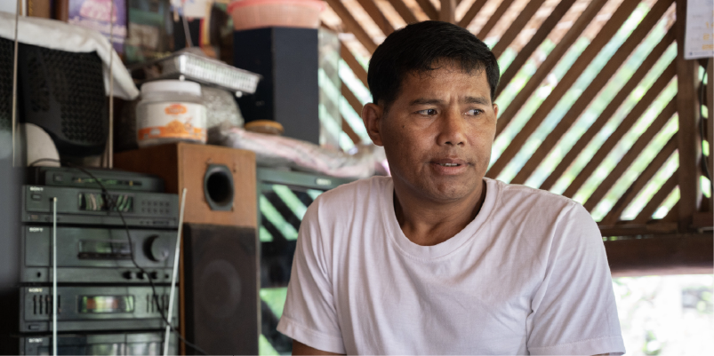

สล่าอูเป็นคนเมืองงาย รัฐฉาน โดยพม่ากดขี่ขมเหงผู้ชายนำเอาไปเป็นทหาร
จึงลี้ภัยอพยพมาเมื่ออายุประมาณ 20 ปี เป็นคนยากคนจนไม่มีรายได้ จึงเดินทาง
เข้ามาที่เมืองไทย เดินเท้าเป็นหมู่มา 3 วัน และได้มาปักหลักที่บ้านป่าพรุ หมู่ 2
เนื่องจากมีเพื่อนที่รู้จักมาอยู่บ้านที่นี้ก่อน และแนะนำหน้าที่การงานให้ จึงมาเลือกที่นี้
โดยเมื่อมาถึงนั้นยังไม่มีงานทำ จึงทำไร่ทำนา รับจ้างทั่วไป และได้แต่งงานกับภรรยา
ละได้เฝ้าที่ดินให้ชาวบ้าน และได้สร้างเรือนเครื่องสับไว้อยู่อาศัย ดำรงชีวิต และเมื่อทำงาน
ก็ได้เก็บเงินและซื้อที่ดินใกล้ที่ทำงาน ตอนนี้ได้ดำเนินการสร้างบ้านหลังใหม่ (รูปแบบสมัยใหม่)
แต่ยังไม่แล้วเสร็จ ความรู้เชิงช่างได้เรียนรู้จากพ่อแม่ที่เมืองงาย และทำงานกับช่างที่พม่า
โดยอาศัยครูพักลักจำ เรียนรู้จากสิ่งที่เห็นและฝึกมือทำ โดยนำมาใช้ในการสร้างเรือนที่อาศัย
ในปัจจุบัน โดยก่อนหน้านี้อาศัยอยู่ด้านหลังถัดไปอีกเป็นเรือนเครื่องผูก แต่เมื่อมีลูก เจ้าของที่ดิน
เอื้อเฟื้อให้มาอยู่บนผืนที่ดิน เนื่องจากการเดินทางจากที่ดินเก่ามาโรงเรียนลำบาก เนื่องจากไม่มี
สะพานข้ามแม่น้ำ จึงมาสร้างเรือนใหม่ไว้ โดยขอความช่วยเหลือ ความร่วมมือจากเพื่อนบ้าน
ชาวบ้านมาร่วมช่วยกันสร้างบ้าน ภายใน 1 วัน โดยผู้ที่มาช่วยเหลือมีความรู้ด้านการสร้างเรือนอยู่แล้ว
โดยสล่าอูได้กำหนดขนาดของเรือนจากไม้ที่มี โดยรื้อไม้เก่าจากบ้านสวนที่ดินเดิม และตัดไม้ใหม่ริมห้วย
ข้ามน้ำมายังที่ดินใหม่ ใช้เวลาขนคนเดียว ระยะทางประมาณ 1 กิโลเมตร จำนวน 4 วัน
“โดยไม้เก่านำมาทำโครงสร้างหลักทั้งหมด ทั้งเสา ขือ คาน บันได โขงหมานอน โดยไม้ใหม่ที่นำมาใช้คือ
กลอน ฝา พื้น โดยรูปแบบเรือนหลังใหม่มีรูปแบบคล้ายแบบเก่า โดยแบบเก่าเป็นจั่วแฝด แต่แบบใหม่เหลือจั่วเดียว ”